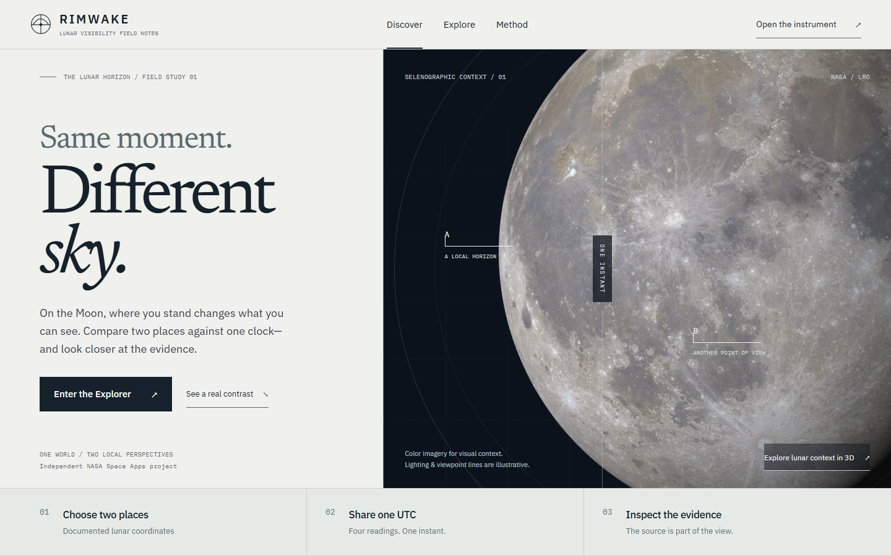
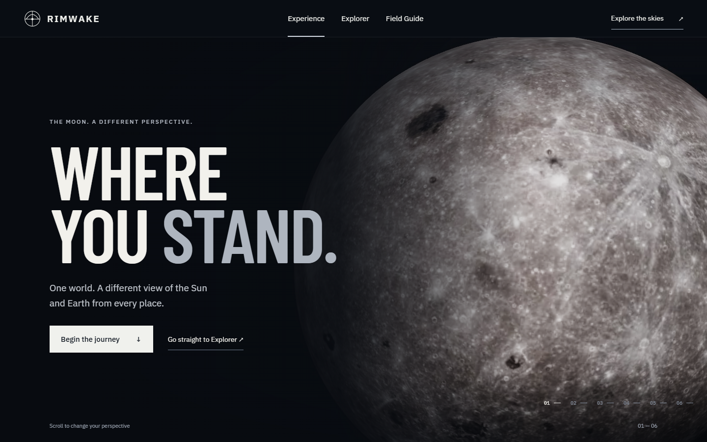
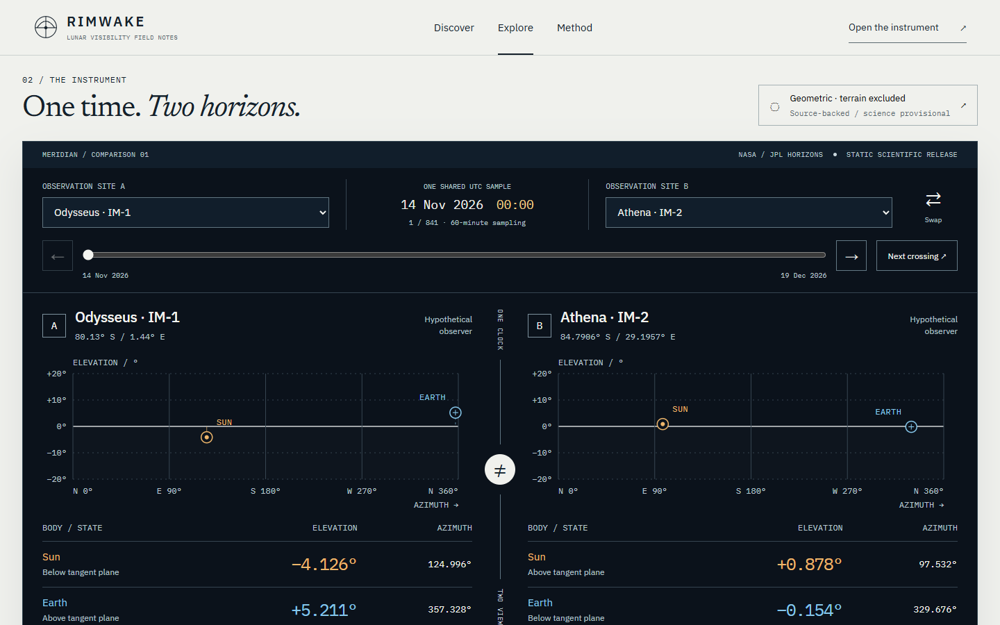
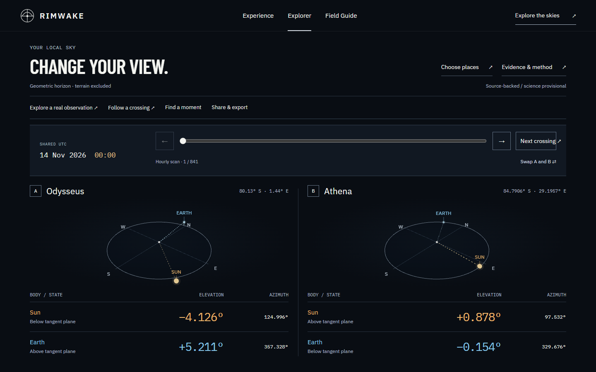

Actual browser captures. Before: Meridian Cut, v6 QA round 2. After: current local production build. The scientific release is unchanged.
Before / Meridian Cut

After / Current production preview

Before / Meridian Cut

After / Current production preview

Feature matrix and remaining gates / Six-slide demonstration